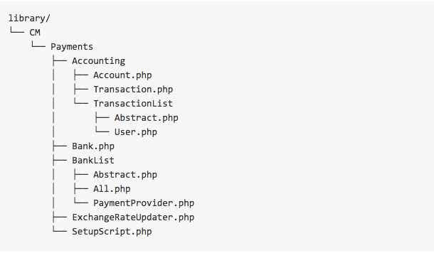
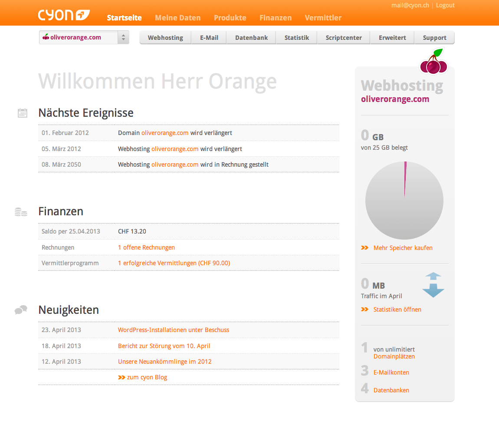
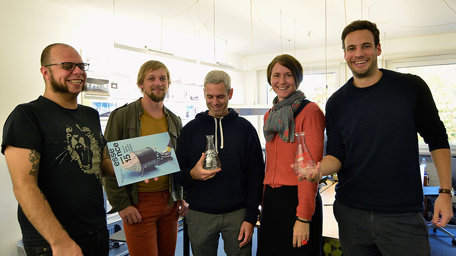
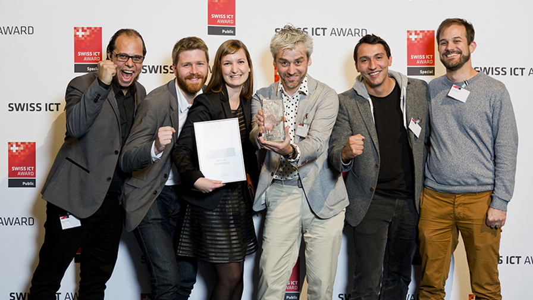

Hi, I am Marcel I love building software and creating music.
I've been writing software since the age of 15. It became my life and my passion. When I am not coding I play bass in a Punk Rock band.
MarcelColomb
2013 - present
Building all sorts of interactive media installations.
These books contain printed and projected contents that can hardly be distinguished from one another. The analogue and digital worlds seem to merge on the pages.
Responsibilities:
- Image recognition written system in python 2.7 using OpenCV libraries.
- CMS containing all texts and media data of the books using Drupal.
- Drupal module exporting all data of an node as XML or JSON.
- Python 2.7 script to extract images from the CMS-XML Export.
- Installing the books on site, calibrating the system (camera and touch system), providing remote access (SSH).
MegaFaces is a cross-platform project that combines digital, sculptural and architectural innovation. It was conceived by London architect Asif Khan and engineered by iart for the Sochi 2014 Winter Olympics and Paralympics. The project was commissioned by the Russian telecom operator MegaFon.
Responsibilities:
- Ubuntu server infrastructure, to process all 3d image data.
- Testing and maintaining photo booths.
2012 - 2013
OpenSource PHP framework - Desigend for high-performing, scalable web-applications. 
Responsibilities:
- Test driven development of the framework in a small team.
- Implementing payment procedures with different payment providers.
- Building a webcam stream service including recording and storing features.
2009 – 2012
PHP backend to manage a cpanel webhosting: financal transactions, registering domains, automated setup, DNS Editor, e-mail, subdomain managing etc. 
Responsibilities:
- Developing the system in a small team.
- Building automated order process.
- Creating DNS Editor.
2006 – 2012
2001 – 2006
hf-ict "College of Higher Education".
Studying all aspect of information technologie, object-oriented programming, server administration, network administration, automatization
2006-2009
Allgemeine Gewerbeschule Basel
Creating physical computer networks (optical fibre, ethernet). Studying electronics.
2001-2005
Object Oriented Programming
Test Driven Development
Agile Software Development
Html5 + css + javascript
PHP
MySQL, PostgreSQL, mongodb
Ubuntu Server Administration
Python 2.7
JAVA
Graphic Design Award 'Essence'
 The interactive book for Paul Gauguin exception was honoured twice at the Graphic Design Award 'Essence'.
The Essence Award is awarded once a year by the industry association SGV Schweizer Grafiker Verband and seeks to 'extract' the essence of contemporary Swiss Graphic Design.
 iart was awarded with the Swiss ICT Award 2014 (the Swiss "Oscar of the ICT industry") for the project MegaFaces.
MegaFaces was awarded the Innovation Grand Prix at the Cannes Lions International Festival of Creativity 2014.
Innovation jury president Tom Bedecarré described the MegaFaces Pavilion as 'indicative of a trend we saw among the entries of the blurring between digital and real experiences — the blurring between marketing communication as an experience and marketing communications becoming a service or technology.'